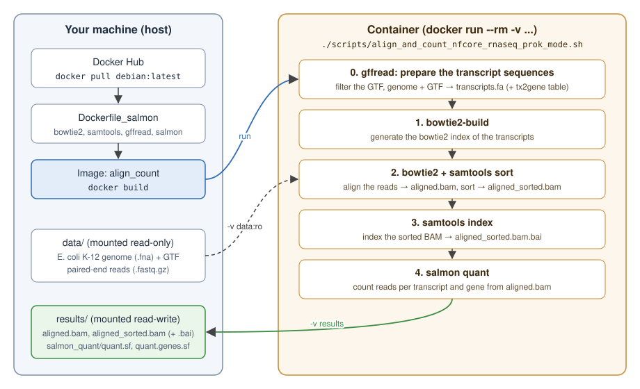

Docker Hands-on training (18-11-2026)#
Initial considerations#
In this course, you can work on your laptop if you have installed the Docker in your machine. For local installation:
Mac: https://docs.docker.com/desktop/setup/install/mac-install/
Windows: https://docs.docker.com/desktop/setup/install/windows-install/
Clone the repository that contain the data, script and all the course information
git clone git@github.com:biosustain/dsp_docker_training.git
Alternatively use Github Codespaces to avoid any system incompatibility. You can open directly a GitHub codespace for this specific repository here: 
Data, biological context and script to run in a Docker container#
Biological context for this hands-on in these slides
Shell script that we want to run inside a container.
Objective of this hands-on#
Build a Docker image from a Dockerfile that contains bowtie2, samtools, gffread and Salmon. Then run a script in a container from that image to align the reads of an Escherichia coli RNA-seq sample with bowtie2 and count the reads per transcript and per gene with Salmon, in the same way as the bowtie2_salmon mode of nf-core/rnaseq for prokaryotes. The input data stays on your machine and the results come back to it.
What we are going to do#

Pull the latest Debian image from Docker Hub.
Write a Dockerfile that adds bowtie2, samtools, gffread, Salmon and our script on top of Debian.
Build the Docker image from the Dockerfile.
Run a container from that image. It mounts
data/read-only andresults/read-write, and runs the script that:generates the bowtie2 index,
aligns the reads with bowtie2 and sorts the BAM file,
indexes the sorted BAM file,
counts the reads per transcript and per gene with Salmon.
Look at the results in
results/on your machine.
Running a container#
First of all, if you installed Docker Desktop on your machine check that Docker Desktop is open and shows “Running” in the status bar.
You can also test with:
docker -v
docker info
Once the docker daemon is running you can create and run a new container from an image, we will start with the hello-world image, which is hosted on Docker Hub.
Docker Hub is Docker’s public registry service where we can store, share, and manage container images. It hosts Docker Official Images (like hello-world), Verified Publisher content, and community-contributed images.
In your command line, run the publicly available hello-world image:
docker run hello-world
We usually run that to check that our installation is working correctly. If you read 'Hello from Docker!' everything is fine for now.
Please read the information given to understand what happened.
What happens:
Client (your terminal) sends run hello-world request.
Daemon (the engine) checks if image exists; if not, pulls it.
Daemon creates and runs the container (i.e hello-world).
Output is sent back to the client (“Hello from Docker!”).
Pulling a container#
Pull the latest publicly available debian image: debian:latest and verify it has been downloaded. Images are pulled by default from Docker hub.
docker pull debian:latest
In Docker image names like debian:latest, the colon separates the image name from its tag.
latestis the tag Docker uses when no tag is given (docker pull debianis the same asdocker pull debian:latest). For the Debian image it points to the current stable release: Debian 13 “Trixie”.latestmoves to a new version over time, so it is handy for exploring but not for reproducible pipelines.
Check which Debian version you got:
docker run --rm debian:latest cat /etc/debian_version
To check which images you have pulled, you can use images command with the following syntax:
docker images
Writing our Dockerfile#
Docker images are created from a textfile called Dockerfile.
This text file contains list of commands to assemble and configure the image with the software required.
For our dockerfile, we will learn the following instructions: FROM, LABEL, WORKDIR, RUN and COPY
Go to Dockerfile references and find out what are these instructions for.
First thing we need is a base image. A dockerfile can use an existing image, and build on top of it. A base image is an image you designate with FROM directive in a Dockerfile. A Dockerfile with the FROM scratch directive uses an empty base image. When we build the Docker image from debian:13 we will get an image with something really close to having installed debian distribution (version 13).
What do we need to add to our Dockerfile?
Base image
Metadata about the image
Working directory
Instructions to download and install software
bowtie2: align reads to a reference
samtools: deal with .bam files (sorting and indexing them)
gffread: build the transcript sequences from the genome and the annotation (GTF)
salmon: count reads per transcript and per gene
copy the scripts folder
Open a file called Dockerfile. code Dockerfile
First let’s specify which base image we want to use. We just pulled debian:latest, which today is Debian 13. In the Dockerfile we write the version number instead of latest, so the image is built on the same Debian release even when latest moves to a newer one:
FROM debian:13
Add some metadata to the image with LABEL:
LABEL image.description="A docker image for aligning prokaryotic RNA-seq data with bowtie2 and counting reads with Salmon"
LABEL image.author.name="Your name"
Define the working directory:
WORKDIR /app
Next, we are going to update the package manager apt-get (included in the debian image) and install the software that we need. All four tools are available in apt-get, which is the easiest solution. We need to use RUN to execute building commands. Removing the apt-get package lists at the end of the same RUN keeps the image smaller.
RUN apt-get update && apt-get -y install \
bowtie2 \
gffread \
salmon \
samtools && \
rm -rf /var/lib/apt/lists/*
In the previous edition of this course we used featureCounts, which is not in
apt-get. We had to download it withcurl, uncompress it and add it to thePATHwithENV. Always check first if your software is inapt-get(or another package manager): it makes the Dockerfile shorter and easier to maintain.
Finally we are going to copy to the image the scripts folder that contains the script that we are going to run.
COPY scripts/ ./scripts/
The complete Dockerfile is in docker_file/Dockerfile_salmon.
Building an image from the Dockerfile#
When you have a Dockerfile, you can build it to a docker image with the build command using the following syntax:
docker build --tag <my-image-name:my-optional-image-tag> <my-location-path>, where --tag is equivalent to -t, -f specifies the Dockerfile, and last thing is <my-location-path> that can be referenced with .
Let’s build your Dockerfile to an image:
docker build -t align_count -f docker_file/Dockerfile_salmon .
Running a container in interactive mode#
While we would rather recommend using virtual environments for running specific environments interactively, it can be handy to be familiar with docker’s ability to run a container in interactive mode. This is just useful to check if the expected software is present within a container, but we do not recommend to change anything in the container, instead do it in the Dockerfile.
This is done by adding the two command line inputs to the docker run command: --interactive and --tty, which have the equivalents -i and -t.
Remember you can always run the following to find out what the parameters used in docker run are:
docker run --help
The interactive mode can be run with the following syntax: docker run -it <image-name> <command>
We will launch the BASH shell (bash) in the align_count image:
docker run -it align_count bash
Then you can check what is in there ls -la or in which directory are we pwd. Which folder can you see?
After looking around lets exit the bash with exit.
Check which software versions you included in your Docker image:
docker run align_count bowtie2 --version
docker run align_count samtools --version
docker run align_count gffread --version
docker run align_count salmon --version
We know that our images are locally available. We also want to check if our containers are still existing.
To do this try: docker ps -a
When we do this we can see that they are still existing. There is no reason for this as these containers are supposed to just do one job based on the docker image.
We can keep our space tidy by adding --rm to the run command to make sure the container is wiped after usage.
File system mounts#
Containers are isolated and run in a completely separate file system and it cannot access the hosting file system by default.
We can use the --volume <host-directory>:<container-directory> syntax to make a file or a folder available inside our container. -v is equivalent to --volume. Its argument consists of two fields separated by a colon (:):
Host source directory path
Container target directory path
In Docker, there is no fixed hard limit on how many -v (volume mounts) you can attach to a container.
Running the container mounting the data#
Finally we are going to build our command line to run our script to align and count the reads inside the Docker container.
We will now make two mounted volumes, a read-only for data (ro), and a writable one for results
Mount paths must be absolute on the container side.
docker run --rm -v ./data/:/app/data:ro -v ./results/:/app/results align_count ./scripts/align_and_count_nfcore_rnaseq_prok_mode.sh
The script runs these steps (see the shell script):
Step 0: Prepare the transcript sequences. Salmon counts reads per transcript, so bowtie2 aligns the reads to the transcript sequences instead of to the whole genome. gffread builds these sequences from the genome and the GTF, after removing the GTF lines with an empty
transcript_id ""that NCBI files for bacteria contain.Step 1: Generate bowtie index (only required once).
Step 2: Run bowtie2 alignment and sort the output BAM file.
Step 3: Index the sorted BAM file: enables fast random access to specific regions of the data.
Step 4: Run Salmon to count reads per transcript and gene.
Results files and interpretation#
Results have been copied back from the container to my local results folder (host). Let’s have a look.
The main output files are:
Running
bowtie2/samtoolsgenerates:aligned.bam: the alignments in the order bowtie2 wrote them. Salmon reads this file.aligned_sorted.bamand its indexaligned_sorted.bam.bai: the alignments sorted by position, for example to look at them in a genome browser.The bowtie2 summary printed on the screen shows that about 64% of the 50000 read pairs aligned.
Running
salmongenerates thesalmon_quantfolder:quant.sf: estimated read counts per transcript. TheNumReadscolumn holds the estimated number of reads.quant.genes.sf: the same values summarised per gene. Out of 4511 genes, 2426 genes have an estimated read count of at least 1.Counts are estimates, so
NumReadscan have decimals.logs/salmon_quant.log: the full Salmon log. Look for theTotal # of mapped readsline: 31921 read pairs were counted.